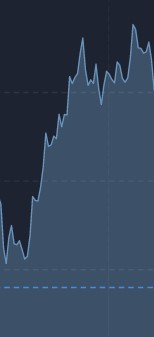
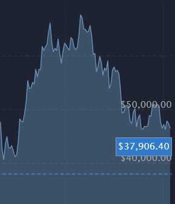

Place du Bitcoin parmi les titres spéculatifs
" Si j’avais investi mes économies dans le Bitcoin, aujourd’hui je serais millionnaire ! "
Introduction
Matthieu Delacharlery, journaliste, emploie le terme d'investissement
quand il s'agit d'acheter du Bitcoin. Cela peut paraître contre-nature car en général,
on n'investit pas dans les monnaies. Pourtant, nous allons donc voir pourquoi le Bitcoin mérite
sa place en tant que titre spéculatif.
Définition
Avant de montrer en quoi le Bitcoin mérite sa place en tant que titre spéculatif,
il est nécéssaire de rappeler ce qu'est que sont la spéculation
et les termes qui lui sont liés.
La spéculation, c'est tout simplement une opération commerciale consistant
à parier sur les cours du marché. Ceux qui parient sont appelés traders.
Un titre spéculatif est donc un élément côté en bourse sur le marché
et possédant une valeur variable.
Il est possible d'investir dans un titre spéculatif, on devient alors un investisseur
La valeur d'un titre spéculatif sur le marché varie
en fonction des investisseurs.
Quand les prix d'un titre spéculatif augmentent, on parle de bulle spéculative.
Quand la valeur d'un titre spéculatif s'effondre,
on parle d'éclatement de la bulle spéculative.
Explication
Ainsi, pour montrer que le Bitcoin mérite sa place en tant que titre spéculatif,
il est possible de montrer a quel point il respecte la définition de la spéculation.
Le Bitcoin est côté sur le marché et possède une valeur variable
On peut le voir ci-dessous sur le graphique suivant représentant
l'historique des valeurs du Bitcoin.
Les prix du Bitcoin varient à la façon d'une bulle spéculative
On peut le voir sur l'image ci-dessous, les prix montent progressivement
en formant une bulle spéculative.

Puis la bulle éclate et les prix diminuent drastiquement en un instant.

Il existe des traders et des investisseurs de Bitcoin
En effet, selon le journal Les Echos, le nombre total de crypto-investisseurs
(ceux qui investissent dans les crypto-monnaies)
dans le monde est estimé à plus de 50 millions. Ainsi le grand nombre d'investisseurs dans le bitcoin
permet de renforcer la spéculation de cette monnaie virtuelle ainsi que la variation de ses prix.
Conclusion
Ainsi, la place du Bitcoin en tant que titre spéculatif est
légitime.
Nous pouvons rapidement revenir sur la citation de la page "Création & Circulation".
Le Bitcoin, "C'est de l'or pour les nerds"
Après avoir expliqué la place du Bitcoin parmi les titres spéculatifs, elle prend un
tout nouveau sens.
En effet, l'or a été l'objet de beaucoup de spéculation, car sa valeur a beaucoup varié au cours de l'histoire.
La comparaison est intéressante car le Bitcoin est
fiable,
minable,
et
spéculatif. Tout
comme l'or.
Le Bitcoin serait alors de
l'or virtuel.